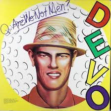
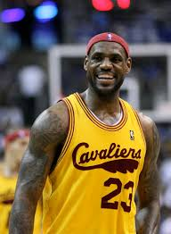

Chryssie Hynde - musician and founding member of the rock band, The Pretenders.

Devo - rock band.
Fun Fact: The members of Devo attended Buchtel High School along with my mother. They were one grade her junior. She characterized them as "weird".

Lebron James - basketball player, Cleveland Cavaliers.

The Black Keys - rock band.

Jim Jarmusch - filmmaker.